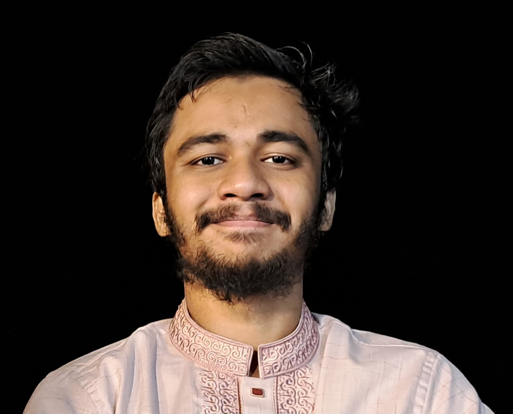

Master of Science in Nuclear Engineering
Texas A&M University
CGPA: 4.00 / 4.00 · College Station, Texas
Inductee, Phi Kappa Phi Honor Society
Graduate Research Assistant · Nuclear Engineering · Texas A&M University
Computational nuclear engineer working at the intersection of reduced-order modeling, data assimilation, and reactor state estimation. Focused on advancing digital twin capabilities for Molten Salt Reactor systems through data assimilation algorithms.

Research Interests
Publications & Manuscripts
"A Generalized Empirical Interpolation Method for direct Multi-physics State Reconstruction"
Applied Mathematical Modelling
Under Review"Multifield Generalized Empirical Interpolation Method For Sensor Selection and State Estimation in Molten Salt Reactors"
PHYSOR 2026
Under ReviewEducation
Master of Science in Nuclear Engineering
Texas A&M University
CGPA: 4.00 / 4.00 · College Station, Texas
Inductee, Phi Kappa Phi Honor Society
Bachelor of Science in Nuclear Engineering
University of Dhaka
CGPA: 3.87 / 4.00 · Class Rank: 3rd of cohort · Dhaka, Bangladesh
Dean's Award Recipient, Faculty of Engineering and Technology
Professional Experience
Graduate Assistant – Research
Department of Nuclear Engineering, Texas A&M University
Developing novel variants of the Generalized Empirical Interpolation Method (GEIM) for multifield, multiphysics state estimation of Molten Salt Reactor systems. Work spans reduced-order modeling, sensor selection theory, and OpenFOAM/GeN-Foam simulation frameworks. Gained experience in the Finite Element Method applied to numerical solutions of PDEs for reactor analysis.
Research Reactor Intern
Centre for Research Reactor, Bangladesh Atomic Energy Commission
Gained hands-on experience with the TRIGA MARK-II Research Reactor at AERE, Savar. Observed and analyzed reactor operations and experimental protocols, developing practical understanding of control systems, safety procedures, and research reactor applications.
Research Projects
Developing a Python-based data assimilation toolchain compatible with OpenFOAM and GeN-Foam cases. Contributed to the development and testing of a new MF-GEIM variant that combines multifield sensor measurements for coupled neutronics–thermal-hydraulics state reconstruction.
Developed a MATLAB software package (undergraduate thesis) implementing the Method of Characteristics (MoC) for the 2D neutron transport equation. Engineered two distinct solvers using flat-source and linear-source approximations; validated against established benchmark problems.
Designed and implemented a discrete ordinates solver for the 2D neutron transport equation in MATLAB. Successfully modeled a challenging heterogeneous checkerboard problem with spatially varying fission cross-sections.
Prototype Radiation Mapping System via UAV
Conceptualized and built a prototype airborne radiation mapping system integrating an ESP32 microcontroller with a BH1750 sensor, programmed via Arduino IDE. The lightweight system was designed for environmental radiation monitoring. Awarded second prize, projects category, Nuclear Fest 2023, University of Dhaka.
Awards & Honors
Inductee, Phi Kappa Phi Honor Society
2026Invited based on academic excellence during MS studies at Texas A&M University.
Dean's Award
2025Faculty of Engineering and Technology, University of Dhaka — awarded for outstanding academic achievement in the BS Honors in Nuclear Engineering program.
Bangladesh Government Scholarship (Nominee)
2025Nominated for high achievement on BS examination results.
Mathematics Olympiad — National Training Camp Qualifier
Secondary SchoolTwo-time national qualifier for Bangladesh Mathematics Olympiad training camps, demonstrating early aptitude for mathematical reasoning and problem-solving.
Second Prize, Projects Category — Nuclear Fest 2023
2023University of Dhaka, for the prototype UAV-based radiation mapping system.
Relevant Coursework
Computational Methods & Mathematics
Numerical Methods in Partial Differential Equations · Radiation Transport Methods · Methods & Applications of PDEs · Numerical Methods for Reactor Engineering
Nuclear Systems & Physics
Reactor Theory & Analysis · Advanced Reactor Design · Fusion Power Engineering · Thermal Hydraulics and Reactor Safety · Radiation Interactions and Shielding · Radiation Detection and Nuclear Materials Measurement · Nuclear Fuel Cycle
Technical Competencies
Additional Experience